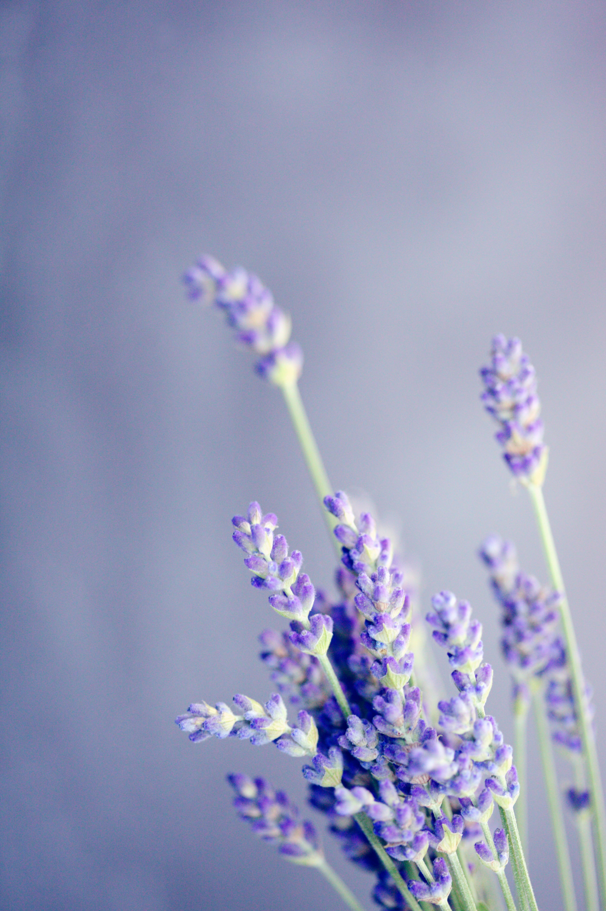

Lavender Profile

Details
Lavandula angustifolia
- Categorization: Perennial Herb (A fragrant classic).
- Key Uses: Essential Oils, Scent, Teas, Baking, Insect Repellent.
- Planting: Full sun, well-draining soil, prune after flowering.
- Care: Drought tolerant, relatively low maintenance.
About Lavender
Lavandula angustifolia
Lavender is one of the most beloved and versatile perennial herbs in the garden. Known worldwide for its soothing fragrance, striking purple blooms, and remarkable resilience, it has been cherished for centuries in traditional remedies, culinary arts, and aromatherapy.
Thriving best in sunny, well-draining environments, lavender naturally attracts beneficial pollinators like bees and butterflies, making it an eco-friendly addition to any green space while providing a calming visual charm.